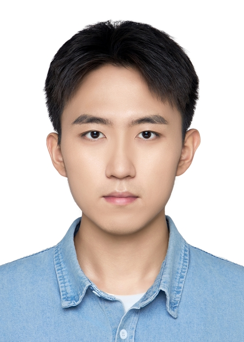

Research interests
My work focuses on artificial intelligence and computer vision for various scientific domains, including materials science and biomedical engineering.
Education
09/2021 – Current
PhD Candidate in Computer Science (Joint-PhD Program)
University of Groningen, Groningen, the Netherlands
Bernoulli Institute for Mathematics, Computer Science and Artificial Intelligence
University of Science and Technology Beijing, Beijing,
China
School of Intelligence Science and Technology
09/2017 – 07/2021
Bachelor of Engineering in Computer Science
University of Science and Technology Beijing, Beijing, China
School of Computer and Communication Engineering
Publications
-
HRTEM-GAN: Structure-preserving restoration of low-quality atomic-scale HRTEM imagesNano Research. SciOpen, 2026.
-
A novel training-free approach to efficiently extracting material microstructures via visual large modelActa Materialia, Volume 290, Article 120962. Elsevier, 2025.
-
Mechanical and Electrical Properties dataset of Cu-Cr-X alloys generated with automated figure data extractionScientific Data, Volume 12, Article 2023. Nature Publishing Group, 2025.
-
DeepMMP: Efficient 3D perception of microstructures from serial section microscopic imagesComputational Materials Science, Volume 235, Article 112826. Elsevier, 2024.
-
From non-expert to expert: Recurrent refined learning for medical image segmentation2024 IEEE International Conference on Bioinformatics and Biomedicine (BIBM), pp. 2086–2093. IEEE, 2024.
-
Self-supervised rotation learning for 3D segmentation on nasopharyngeal carcinoma MRI images2023 IEEE International Conference on Bioinformatics and Biomedicine (BIBM), pp. 3529–3534. IEEE, 2023.
-
Atomic-scale insights on hydrogen trapping and exclusion at incoherent interfaces of nanoprecipitates in martensitic steelsNature Communications, Volume 13, Article 3858. Nature Publishing Group, 2022.
† Equal contribution
* Corresponding author